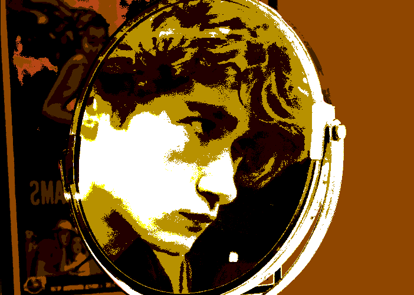

About J.H.G.H.
Artist, Programmer, Game Developer, Video Editor and Engineer
...
the jamer in question

bio
my name is J.H.G.H., or James. What the H.G.H. is for, I'll leave for later. I'm a programmer, game developer, artist and engineer from Hamilton, Ontario, Canada. i'm currently graduating high school, and will be attending OCAD University's Digital Futures program in fall of 2023. i'm 17 years old. here's a bit about me.
art
i'm mainly a digital artist, but i don't let that stop me from experimenting in other mediums. most recently i've been learning watercolours and latte art. i tend to stick to a semi-cartoonish, semi-realistic style, but i want to explore more of the stylized side of my art in the future. i also mostly focus on the human form, specifically on character design and portraits. i've been learning more about environmental art and also hope to expand my skillset in that direction soon. i love rough, painterly rendering styles, and expressive faces with dynamic poses and camera angles- hopefully you can see that influence in my art.
games
i'm a huge fan of osu!, the classic 2007 rhythm game developed by Dean "ppy" Herbert. so, it only makes sense that the first real "game" that i ever developed was a rhythm game of my own. i called it Zero Beat, and made a really rough prototype in C#'s MonoGame framework for my grade 11 computer science class. it was my first real game, with all-original code (save for some tutorials taken from youtube) and art. although the project cut my ambitions short, it was a great exercise in game development and taught me so much about C# and game design. i'm currently working on another secret project, based on prompts from this spring's past Ludum Dare 53.
engineering/tech design
i love making technology. whether its something completely new and useless or a design that has been used for hundreds of years, its always a joy to take something from a concept to a physical prototype. some projects that i'm particularly proud of include a wifi-controlled motorized USB camera meant to be used for conference calls in large groups, and my short-lived tennis ball cannon (that only managed to launch about 3 metres). i have a lot of projects in the works in terms of tech design and engineering, so stay tuned to see more of my designs come to life.